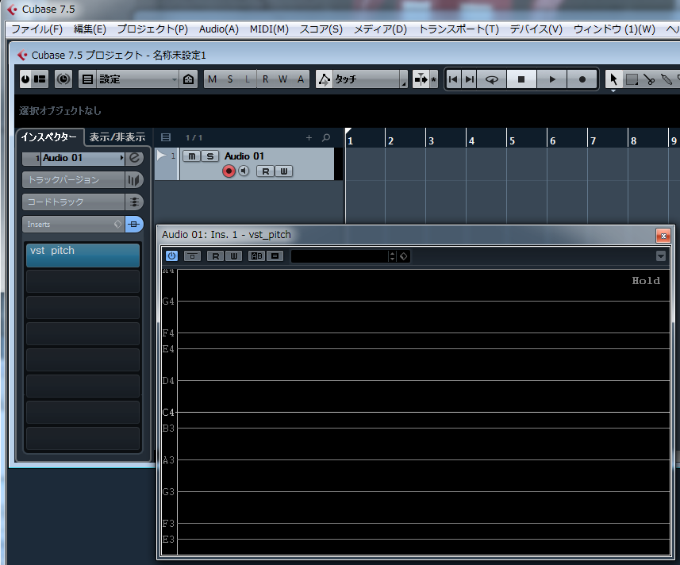
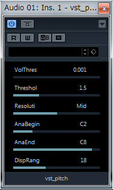

Cubase7.5での設定例
ダウンロードしたzipファイルを任意のディレクトリ（以下の例では「C:\Program Files\VstPlugins\vst_pitch.dll」）に解凍した後、
Cubaseのメニューから「デバイス」→「プラグイン情報」を選択し、
「VST 2.xプラグインのパス」ボタンを押して、
「追加」ボタンを押して、「C:\Program Files\VstPlugins」を選択してください。
「C:\Program Files\VstPlugins」が追加済みの場合は、追加の操作は不要です。
Cubaseを再起動して、メニューから「デバイス」→「プラグイン情報」を選択して、VSTプラグインの一覧に「vst_pitch」が表示されていることを確認してください。

Cubase7.5での使用方法
- プロジェクトに音程を解析したいAudioトラックを追加します。(モノラル/ステレオどちらでも構いません。)
- 追加したAudioトラックのインスペクターのInsertsから、「vst_pitch」を選択して、VSTプラグインを挿入します。
vst_pitchの画面が表示されます。

- 録音中の音声の音程をリアルタイムに解析するには、AudioトラックのモニタリングをONにします。
- マイクから音声を入力して、音程がグラフ表示されることを確認してください。
- 録音した音声を解析するには、Audioトラックに音声を録音して、再生してください。
その際、モニタリングはOFFにする必要があります。
- MIDIトラックを重ねて表示するには、プロジェクトにMIDIトラックを追加し、
MIDIトラックのインスペクターからMIDI OUTを「Audio01:Ins.1vst_pitch - MIDI In」に設定します。
- 再生しながら音声を入力すると、MIDIトラックのノートと音程が重なって表示されます。
青のラインがMIDI、黄色のラインが音声の音程です。
Cubase7.5での解析パラメータ設定例
VST画面のメニューから「一般エディターに切り替え」を行うと、パラメータの編集ができます。
編集できるパラメータは、
VolThres：音量の閾値
Threshol：ピッチと認識するスペクトル強度の閾値
Resoluti：解析周波数精度（Low：低い、Mid：普通、High：高い）
解析精度を高くすると、レスポンスは悪くなります。
AnaBegin：解析範囲(最低音階)
AnaEnd：解析範囲(最高音階)
DispRang：1画面に表示する音階の数(半音単位)
ビブラートの詳細に見たいなどの場合、音階数を少なくするとより1音階が広く表示されます。

REAPER 0.999での設定例
ダウンロードしたzipファイルを任意のディレクトリ（以下の例では「C:\Program Files (x86)\Cakewalk\Vstplugins」）に解凍した後、
REAPERのメニューから[Options]→[Preferences]を選択し、
左ペインから、「FX Plug-ins」を選択し、VST plug-ins pathsに「C:\Program Files (x86)\Cakewalk\Vstplugins」と入力し、
[Add...]ボタンを押してから、[Recan directory]ボタンを押します。
その後、[OK]ボタンを押してウィンドウを閉じます。
REAPER 0.999での使用方法
1. メニューから[Track]→[Add new track]を選択し、オーディオトラックを追加します。
2. 追加されたオーディオのトラックの[fx]ボタンをクリックします。
3. 左ペインから「All Plugins」→「VST」を選択し、「VST:vst_pitch」を選択して、[OK]を押します。
※「VST:vst_pitch」が表示されない場合は、VSTプラグインの設定を見なおしてください。
4. 下図のようなウィンドウが表示されます。
5. リアルタイムに入力した音声の音程を解析するには、オーディオトラックの録音をONにして、
モニタリングをONにした状態で、マイクから音声を入力してください。
上記4.で表示された「FX chain for track 1」ウィンドウに、リアルタイムに音程がグラフ表示されます。
※リアルタイムにモニタリングする場合は、オーディオデバイスの設定が「ASIO」でないと、
かなりのラグが発生します。「ASIO」に対応したオーディオデバイスを持っていない場合は、
「ASIO4ALL」をインストールしてください。
ASIO4ALLの設定方法はここでは解説しませんので、調べてください。
6. 録音した音声を解析するには、REAPERで録音を行って、再生を行えば、モニタリングのときと同様に、
「FX chain for track 1」ウィンドウに、音程がグラフ表示されます。
山岡忠夫

戻る